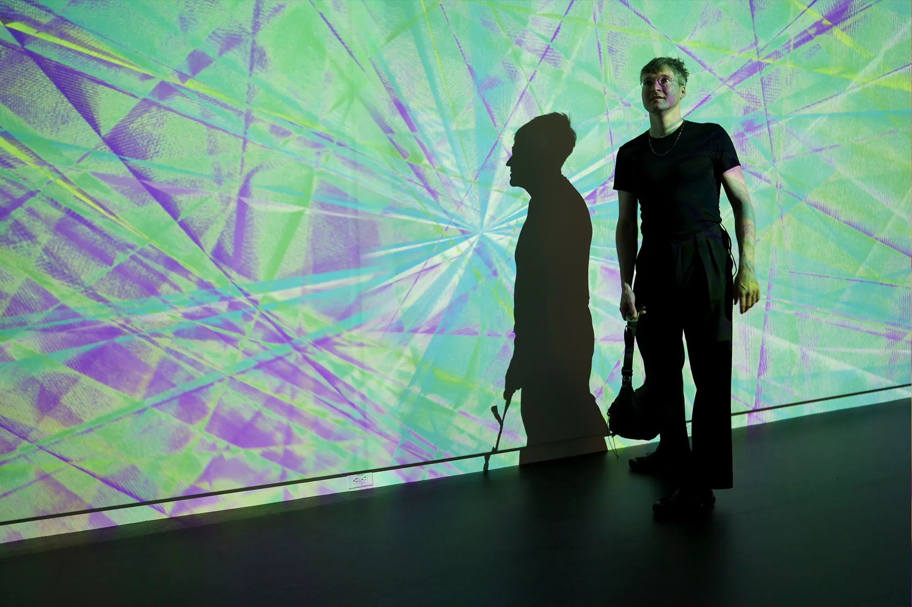
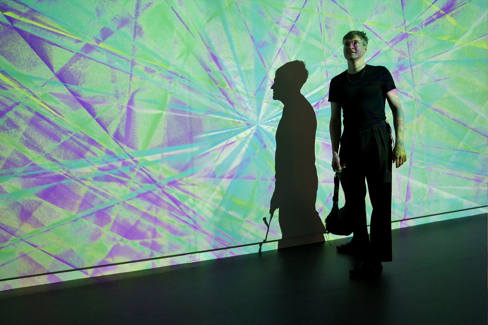

In a 2025 Harvard Magazine symposium on contemporary art, scholars explored how AI and algorithmic systems are increasingly shaping what is recognized and valued as art. Data-driven curation doesn’t merely reflect audience taste; it actively determines what people see, share, and deem “successful,” often amplifying certain styles, genres, or creators while leaving others virtually invisible. Algorithms act like digital brushstrokes, influencing perception, dictating trends, and prioritizing content that fits engagement metrics, virality, or commercial logic. The artworks and creative expressions that reach the public are therefore frequently chosen not for their originality, depth, or cultural significance, but for how well they align with algorithmic patterns and marketable aesthetics.
This system has profound consequences for independent and experimental creators. Art that challenges norms, explores unconventional ideas, or emerges from marginalized voices is frequently buried beneath algorithmically optimized content. True creativity is overshadowed by what the data favors, meaning that what we consume culturally is increasingly dictated by commercial priorities and algorithmic design rather than by the inherent merit or innovation of the art itself.